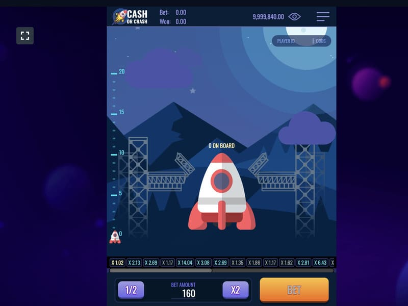
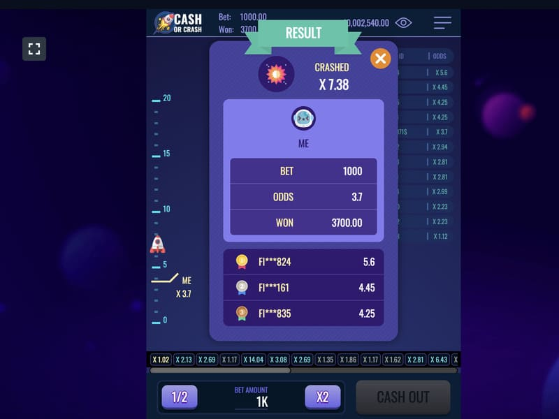
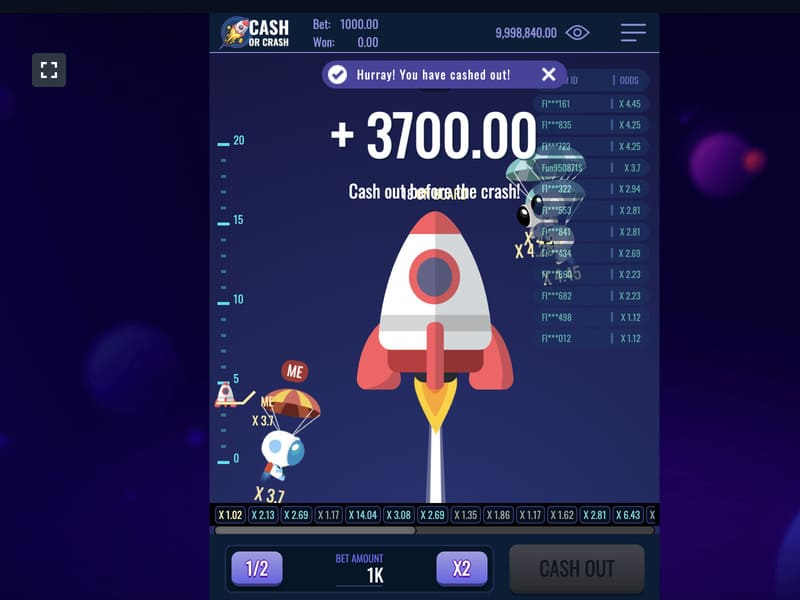

Play Cash or Crash at an online casino
Evolution has put together a unique portfolio of real-time games. Among them, the online game Cash or Crash live stands out. Here, players will not only find themselves in a huge airship but also raise it to a height, moving along the game stairs. The rules are very simple: you need to collect green balls, increasing the chances of reaching the top. The gameplay will be exciting because at any moment a red ball can fall out, which will stop the rounds. There are many chances to win, as the game contains an additional shield and an unrealistically huge percentage of return - 99.59%.

Reasons for popularity of Cash or Crash live
Virtual reality games are a hit in the world of online casinos. Players highlight the many benefits of Cash or Crash, including:

Players have the opportunity to multiply the bet by 50,000 times, while optimal strategies are in place, providing a return percentage of 99.59%.
The gameplay takes place in real-time, in a beautifully designed studio that resembles the inside of an airship. This design ensures maximum engagement. The rounds are held by the presenter, which only emphasizes reality and creates the effect of presence. Additional motivation adds sound and musical accompaniment.
Development using innovative technologies allows you to spend an exciting time and check the favour of Fortune from anywhere in the world. You just need to have a gadget at hand and access to the Internet.
An intuitive control panel is located at the bottom of the screen, beforehand, players can familiarize themselves with detailed instructions and rules.
Players experience an extravaganza of feelings when the desire to reach the top of the ladder is intertwined with the fear of losing the winnings. The provider took these emotions into account by introducing the optimal function of cashing out half of the winnings.
Participants decide on their own: to continue the rounds, stop or take half, which is also a plus. The possibility of varying outcomes and tactics attracts many gamblers, which has a positive effect on the popularity of the hit slot.
How to play and win at Cash or Crash Live
A starter set of transparent apparatus with balls may seem like a guaranteed winner. There is an order of magnitude more green balls (19 green and 8 red), so initially, the chances of winning are much greater. The player advances to the next level when the green option comes up. The game ends when a red ball is dropped. The golden ball provides a shield, in other words, an extra life.
If the round ends with a green ball falling out or the shield disappearing, there are several options to choose from:
To select, the player must press the Continue, Take Half, and Take All buttons, respectively. With the rise of each step, the multiplier also grows: the coefficient starts from x1.2, and at the last stage it is x50000. Winning can become a real Jackpot, and varies directly from the size of the bet.
Strategies and tactics in Cash or Crash

While playing Cash or Crash Live, there are airships of a certain color with percentages on the screen. This indicator corresponds to the chances of a green or red ball falling out. Playing multiple rounds significantly reduces the percentage of the winning roll, but increases the prize balance. The provider offers a huge return percentage in Cash or Crash. It is realistic to achieve such an indicator by applying an effective strategy:
These tactics are guaranteed to provide small but frequent wins. In pursuit of a big jackpot, you need to pay attention to other strategies that can be combined or changed, depending on the desires and the allocated budget. These include:
Applying any tactics, do not forget about the information near the airships. Given the indicators, it will be easy to make the right decision: continue, stay or pick up. Some solutions reduce the RTP. The maximum bet limit is limited by the manufacturer, which should be taken into account when receiving a win, especially when a golden ball falls out.
The essence of the Cash or Crash game
The game Cash or Crash is quite simple, but at the same time interesting. There are no story bonus features here, but the rounds are exciting, allowing you to make decisions that directly affect the number of winnings. That is why players can play both for fun and money.
A high percentage of returns provides the opportunity to always be in the black. Those who want to hit the big jackpot will experience a lot of driving emotions since the risks are significant. However, the x50,000 wins can easily outweigh the loss.
Where to play Cash or Crash

When thinking about where to play Cash or Crash online, pay attention to choosing the right online casino. What is the right online casino? We are talking about an honest casino, where:
If these two conditions are met, you can, without hesitation, register on the site of game provider - an online casino and start playing. Be sure that on our site we recommend only honest online casinos that provide a licensed version of the Cash or Crash game and guarantee the payment of winnings to players. Where to play Cash or Crash live? We will advise.